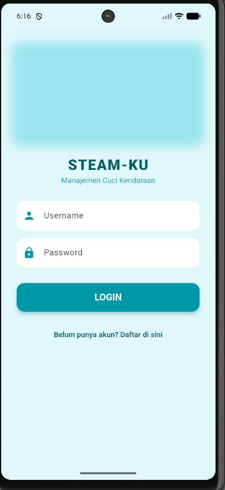
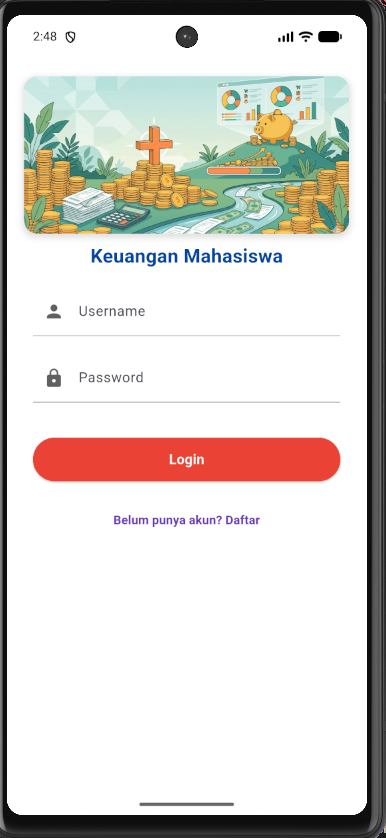
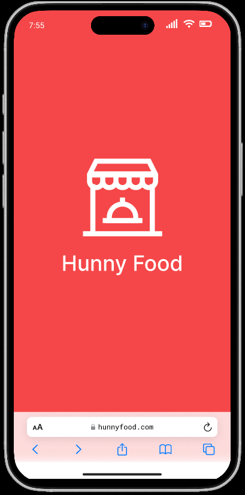
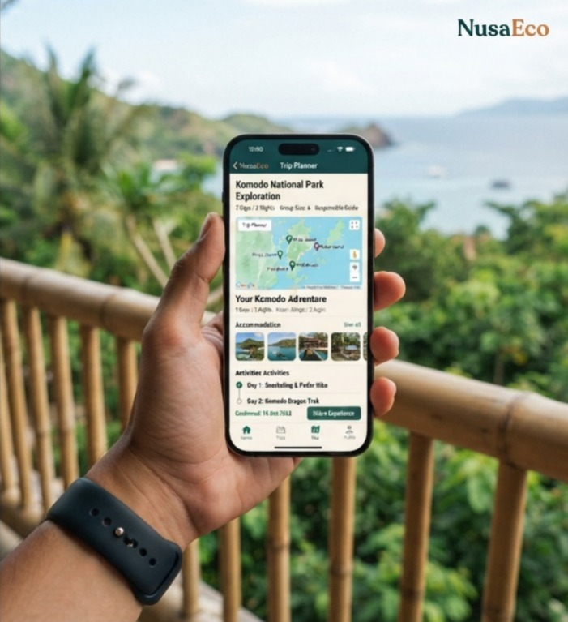

01 StokKu
StokKu membantu admin tempat penyimpanan mencatat dan melihat stok laptop, HP, dan TV. Admin juga dapat mengedit data gadget.
Mobile · Flutter, Dart Selesai


Saya membuat lima proyek ini saat belajar, sebagian besar di mata kuliah Mobile Programming. Tiga di antaranya adalah aplikasi mobile. Dua lainnya berupa desain antarmuka dan konsep aplikasi.
StokKu membantu admin tempat penyimpanan mencatat dan melihat stok laptop, HP, dan TV. Admin juga dapat mengedit data gadget.
Mobile · Flutter, Dart Selesai
Flutter, Dart

Flutter, Dart, SQLite

Figma

Ilustrasi dengan bantuan AI
